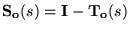
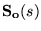
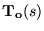
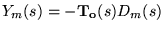
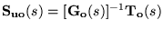
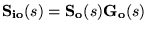
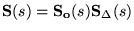
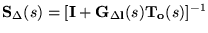

|
You are here : Control
System Design - Index | Book Contents |
Chapter 24
24. Fundamental Design Limitations in MIMO Control
Preview
The best way to learn about real design issues is to become involved
in practical applications. Hopefully, the reader may have gained some
feeling for the lateral thinking that is typically needed in all real
world problems from reading the various case studies that we have
presented. In particular, we point to the 5 MIMO case studies described
in Chapter 22.
In this chapter, we will adopt a more abstract stance and extend the
design insights of Chapters 8 and 9 to the MIMO case. As a prelude to
this, we recall that in Chapter 17 we saw that by a combination of an
observer and state estimate feedback, the closed loop poles of a MIMO
system can be exactly (or approximately) assigned depending on the
synthesis method used. However, as in the SISO case, this leaves open
two key questions; namely, where should the poles be placed and what are
the associated sensitivity trade-off issues. This raises fundamental
design issues which are the MIMO versions of the topics discussed in
Chapters 8 and 9.
It has been shown in Chapters 8 and 9 that the open loop properties
of a SISO plant impose fundamental and unavoidable constraints on the
closed loop characteristics that are achievable. For example, we have
seen that, for a one degree of freedom loop, a double integrator in the
open loop transfer function implies that the integral of the error due
to a step reference change must be zero. We have also seen that real RHP
zeros necessarily imply undershoot in the response to a step reference
change.
As might be expected, similar concepts apply to multivariable
systems. However, whereas in SISO systems, one has only the frequency
(or time) axis along which to deal with the constraints, in MIMO systems
there is also a spatial dimension, i.e. one can trade off limitations
between different outputs as well as on a frequency by frequency basis.
This means that it is necessary to also account for the interactions
between outputs rather than simply being able to focus on one output at
a time. These issues will be explored below.
Summary
- Analogous to the SISO case, MIMO performance specifications can
generally not be addressed independently from another, since they
are linked by a web of trade-offs.
- A number of the SISO fundamental algebraic laws of trade-off
generalize rather directly to the MIMO case
-

implying a trade-off between speed of response to a change in
reference or rejecting disturbances (

small) versus necessary control effort, sensitivity to
measurement noise or modeling errors (

small)
-

implying a trade-off between the bandwidth of the complementary
sensitivity and sensitivity to measurement noise.
-

implying that a complementary sensitivity with bandwidth
significantly higher than the open loop will generate large
control signals.
-

implying a trade-off between input and output disturbances.
-

where

implying a trade-off between the complementary sensitivity and
robustness to modeling errors.
- There also exist frequency- and time-domain trade-offs due to
unstable poles and zeros:
- qualitatively they parallel the SISO results in that
(in a MIMO measure) low bandwidth in conjunction with unstable
poles is associated with increasing overshoot, whereas high
bandwidth in conjunction with unstable zeros is associated with
increasing undershoot
- quantitatively, the measure in which the above is
true is more complex than in the SISO case: the effects of
under- and overshoot, as well as integral constraints, pertain
to linear combinations of the MIMO channels.
- MIMO systems are subject to the additional design specification of
desired decoupling.
- Decoupling is related to the time- and frequency-domain
constraints via directionality:
- The constraints due to open-loop NMP zeros with non-canonical
directions can be isolated in a subset of outputs, if triangular
decoupling is acceptable.
- Alternatively, if dynamic decoupling is enforced, the
constraint is dispersed over several channels.
- Advantages and disadvantages of completely decentralized control,
dynamical and triangular decoupling designs were illustrated with an
industrial case study:
| Sugar mill case study |
|
Design
|
Advantage
|
Disadvantage
|
| Decentralized |
Simpler SISO theory can
be used |
Interactions are
ignored; poor performance |
| Dynamic Decoupling |
Outputs can be
controlled separately |
Both output must obey
the lower bandwidth constraint due to one NMP zero |
| Triangular Decoupling |
Most important output
decoupled and without NMP constraint |
The second (albeit less
important) output is affected by the first output and NMP
constraint. |
|